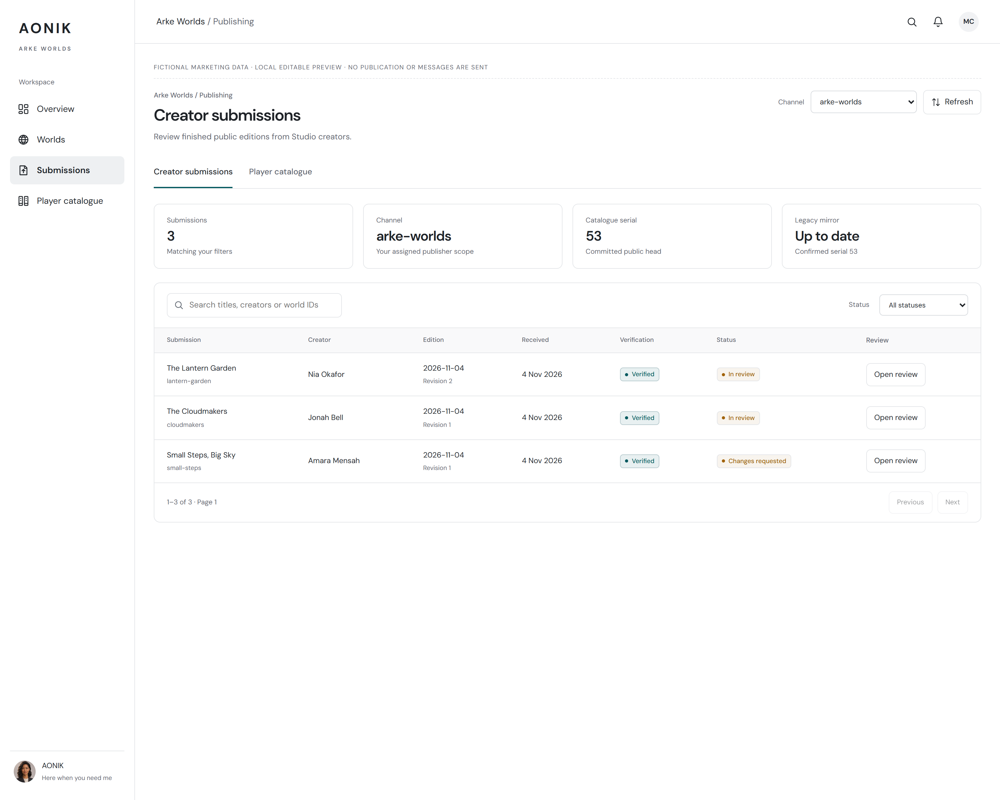
Editorial inbox
A clear queue of exact, privately verified revisions.
Editable canvas · Light export · Dark exportArke editorial review and Player publication, inside the AONIK workspace. Exact revisions, independent approvals and recoverable delivery, using the same view components and icons as the application.
Open all editable artboards · Implementation & qualification
Fictional marketing records. Editable examples perform no API calls, send no messages and publish nothing. Staff application routes use live APIs and require assigned permissions. Production rollout remains subject to channel qualification.

A clear queue of exact, privately verified revisions.
Editable canvas · Light export · Dark export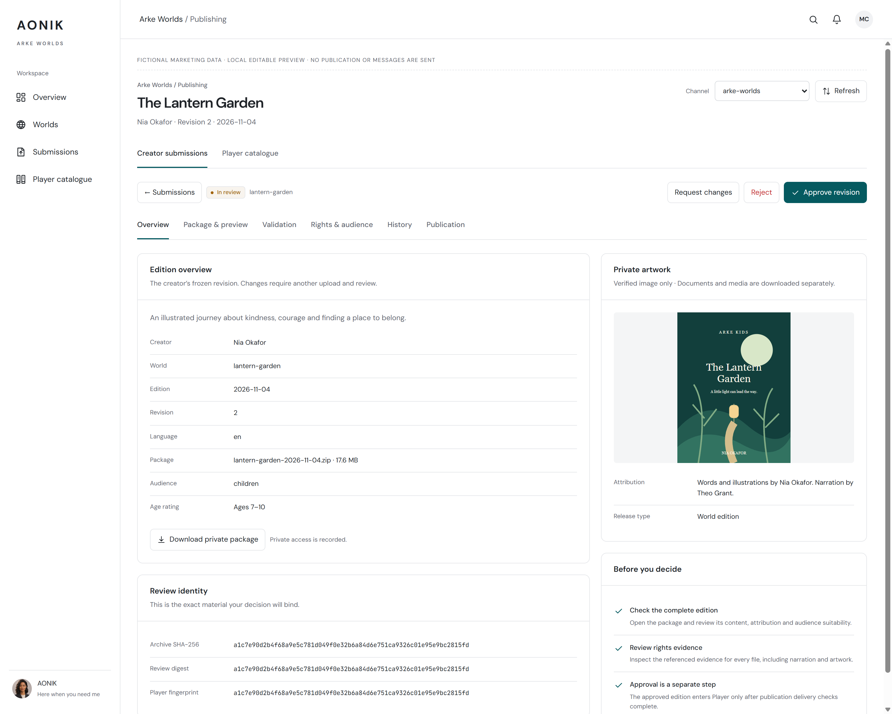
Creator, audience, package and approval readiness in one place.
Editable canvas · Light export · Dark export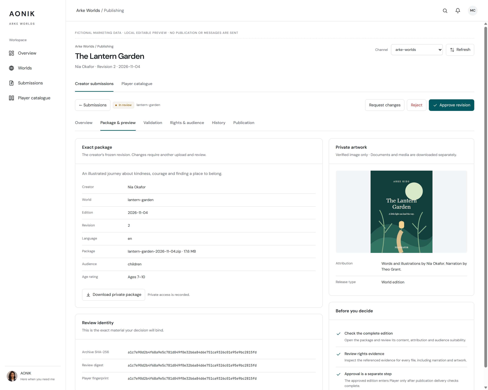
Authenticated artwork, media inventory and immutable digests.
Editable canvas · Light export · Dark export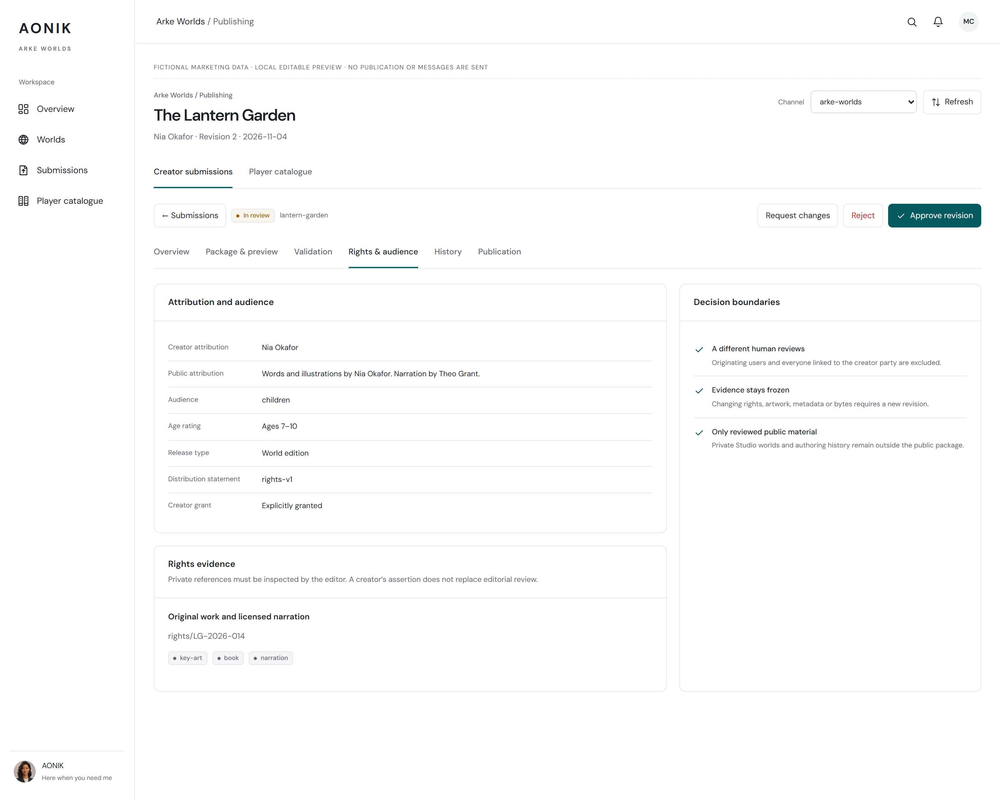
Evidence coverage, attribution and age suitability.
Editable canvas · Light export · Dark export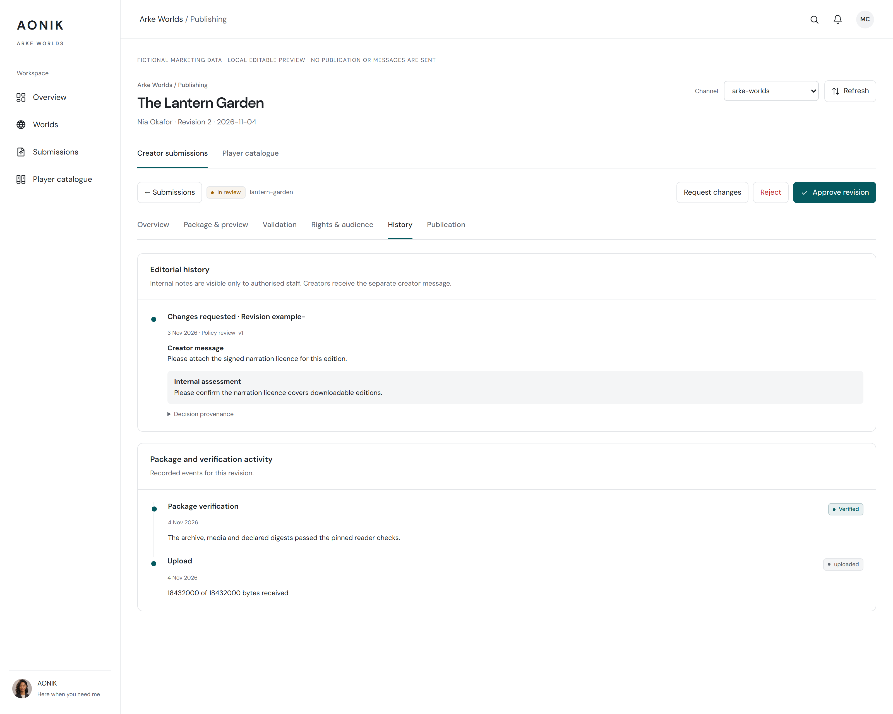
Private assessments and creator messages are clearly separated.
Editable canvas · Light export · Dark export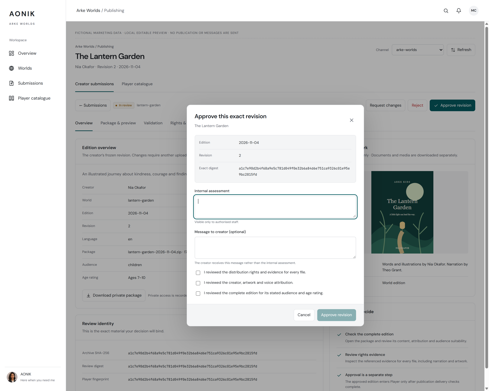
Explicit checks bind the decision to this exact revision.
Editable canvas · Light export · Dark export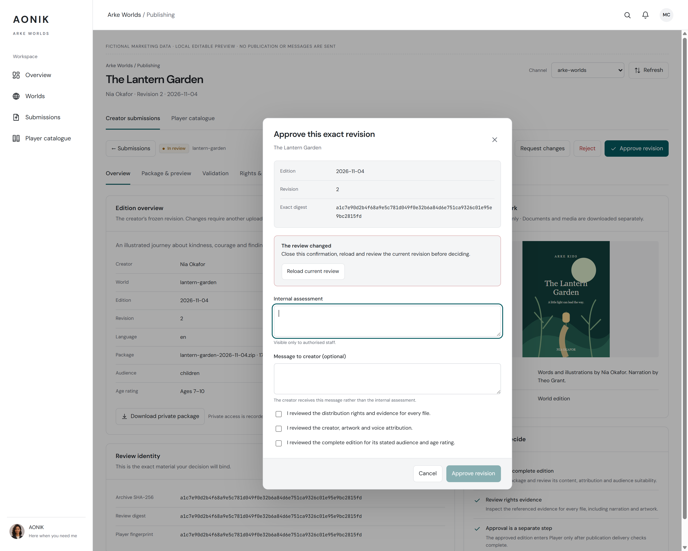
A stale confirmation stops and asks the editor to reload.
Editable canvas · Light export · Dark export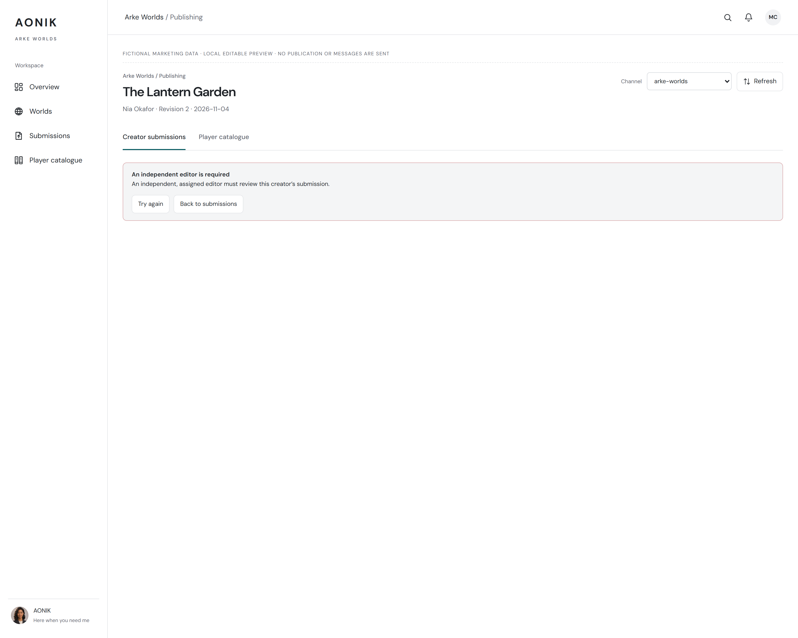
Permission and self-review restrictions fail closed.
Editable canvas · Light export · Dark export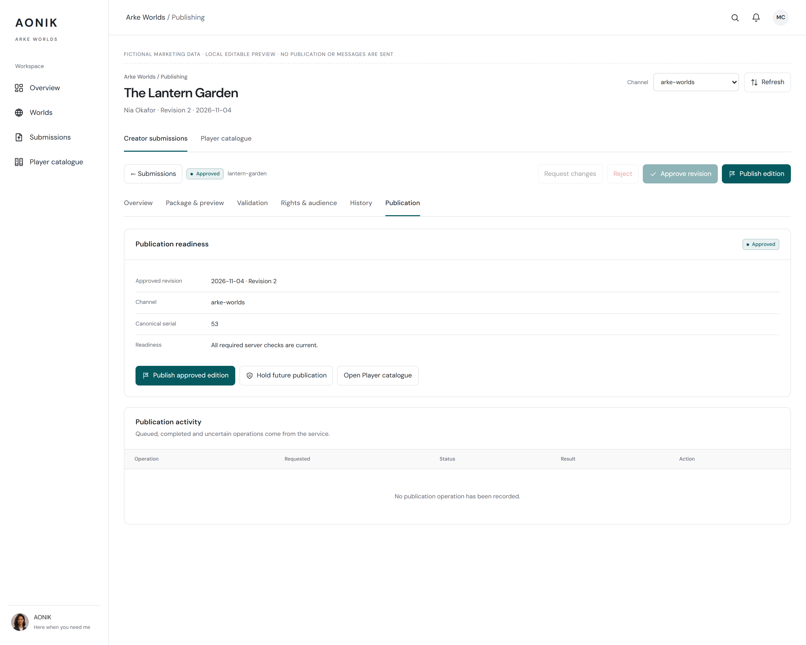
Approval remains separate from public delivery.
Editable canvas · Light export · Dark export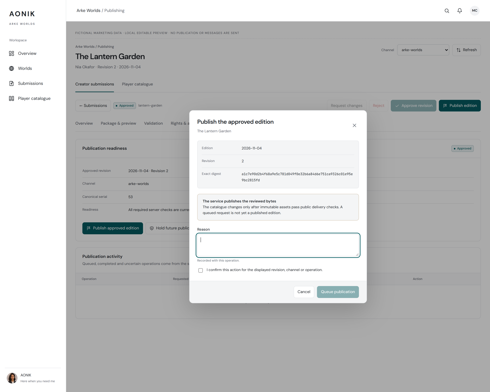
Release the displayed approval against the current catalogue head.
Editable canvas · Light export · Dark export
Public provenance, immutable pins and canonical serial.
Editable canvas · Light export · Dark export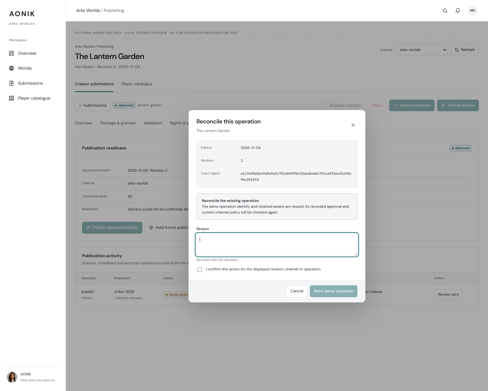
Retry the same durable operation after an uncertain public fetch.
Editable canvas · Light export · Dark export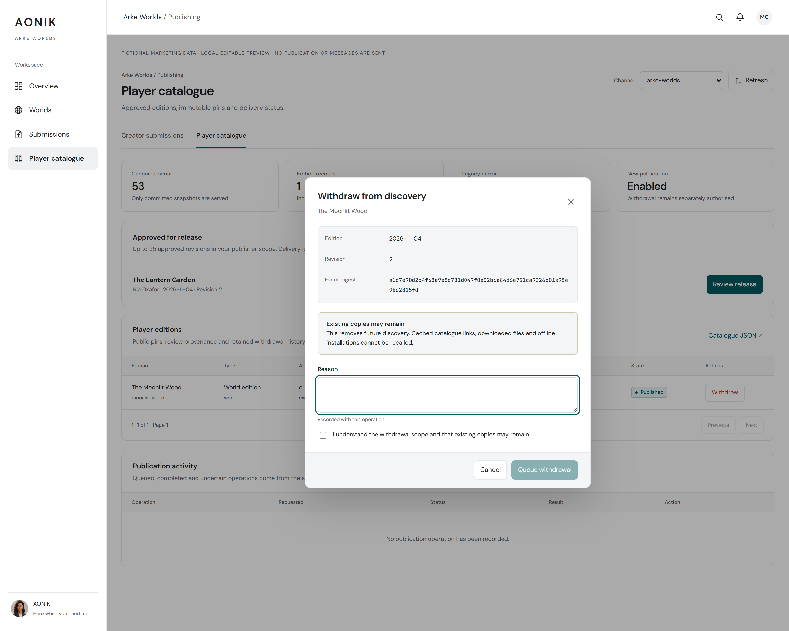
Explain removal from discovery and the limits of offline withdrawal.
Editable canvas · Light export · Dark export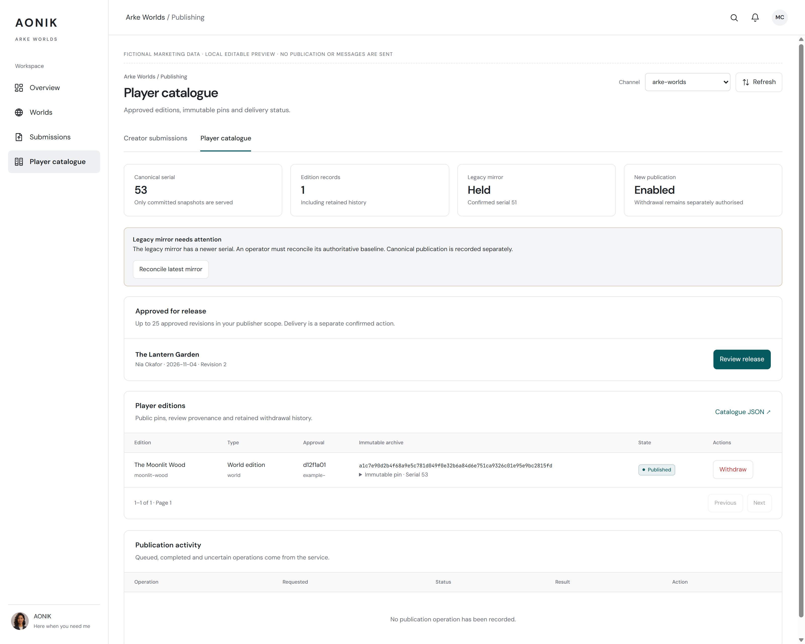
Optional legacy sync status is separate from the canonical catalogue.
Editable canvas · Light export · Dark export